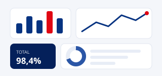

Portafolio · Tablero Gerencial y de Directorio
KPIs de la cartera, embudo de maduración, curva S de compromisos contra cierres, mapa de calor por área y etapa, carga por responsable y explorador de iniciativas y actividades con sus documentos y comentarios.
Directorio
Gerencia
Seguimiento de proyectos
este sitio · /portafolio